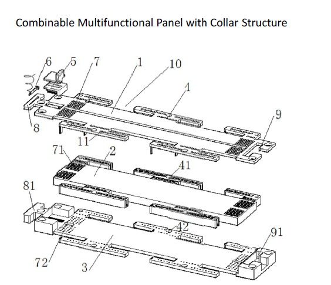

Patent No.201020280451.2. First inventor
Panel is an important tool for overlapping the circuit in laboratory. During the circuit experiment, insert the pins and leads of the electronic components in holes and connected them with the spring in hole under the requirement of the circuit connecting. And then the experimental circuit has been finished. The structures of the components of the panel are same in all the factories. But when pulling and inserting repeatedly or inserting the thicker pins into hole forcibly, the sheet copper will loose elasticity. At that moment, it’s impossible to connect with the island though inserting the components into the hole. And the experiment will fail. Due to the design principles of metal collar, all the metal collar components will be passively forced while the pins entering. And the repeated inserting and pulling increase the fatigue of the metal and shorten the service life and affect the experiment process. Finally, there is no tiny device of assisting the electroprobe to test on the panel. It’s difficult to test the parameter value of the pins. If you test with electricity, it will cause short circuit.
This invention displays a kind of multifunctional panel with collar structure, including above-board, mid-board and below-board. The side of the main body has many tongues and grooves. There is a locator between the above-board and the mid-board. The main body is covered with many holes through the three boards. And the hole is composed by the first run-through part on the above-board, the second run-through part on the mid-board and the third run-through part on the below-board. The second run-through part has a collar structure. And there is a connection of conducted metal among each second run-through part of all holes. The hole of this kind of panel has a collar structure and can lock various pins whose diameter is between 0.4mm and 0.8mm, broaden the applicability, implement the connection of different circuits by combining of many panels and bring great convenience by increasing the electroprobe.
